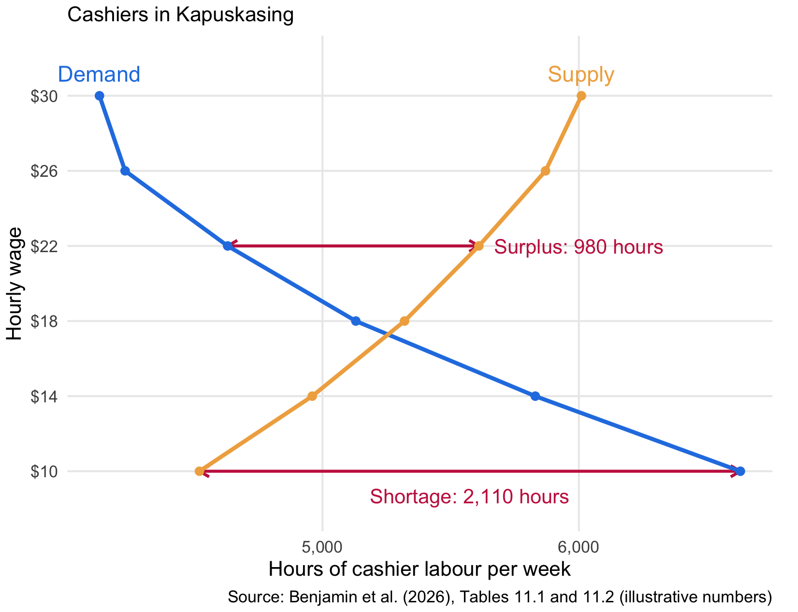
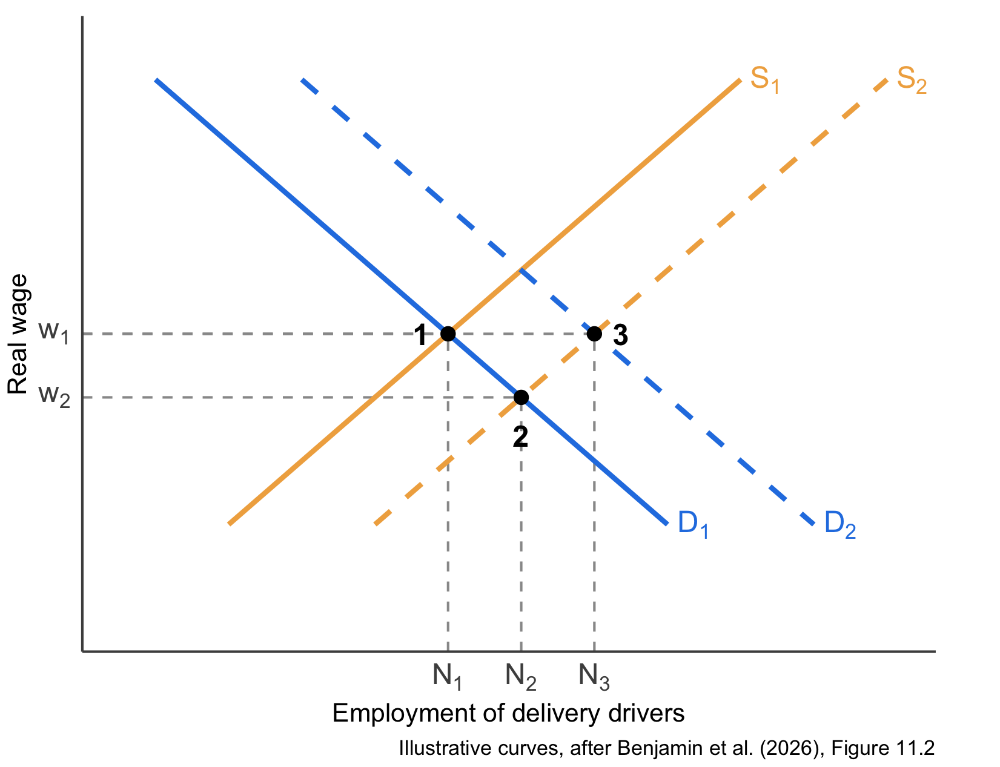
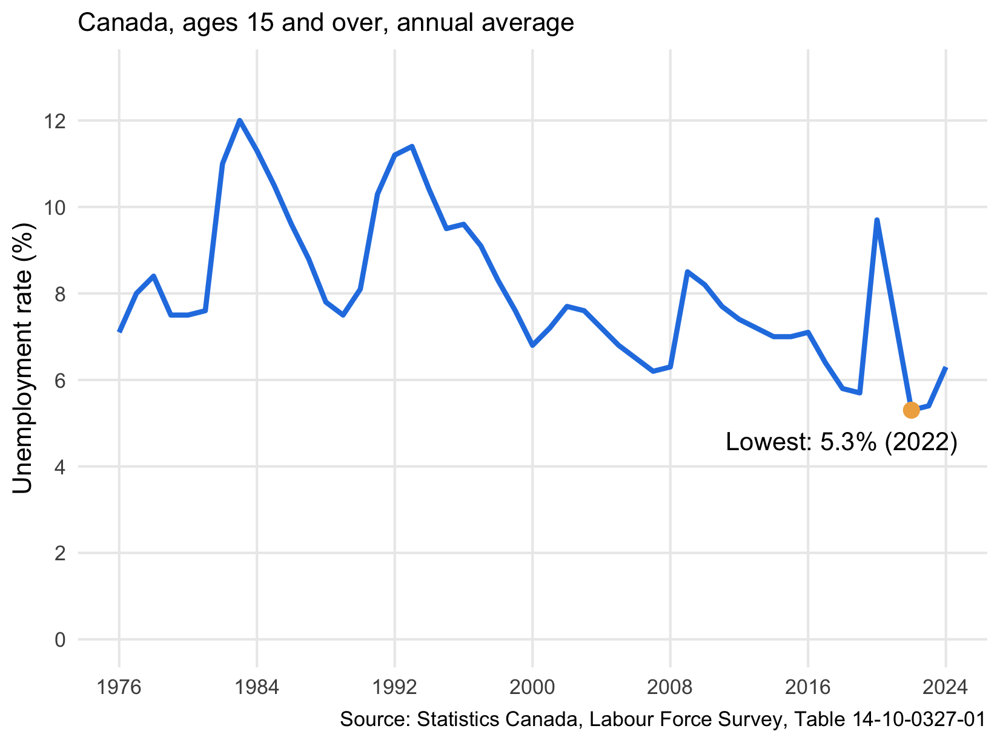
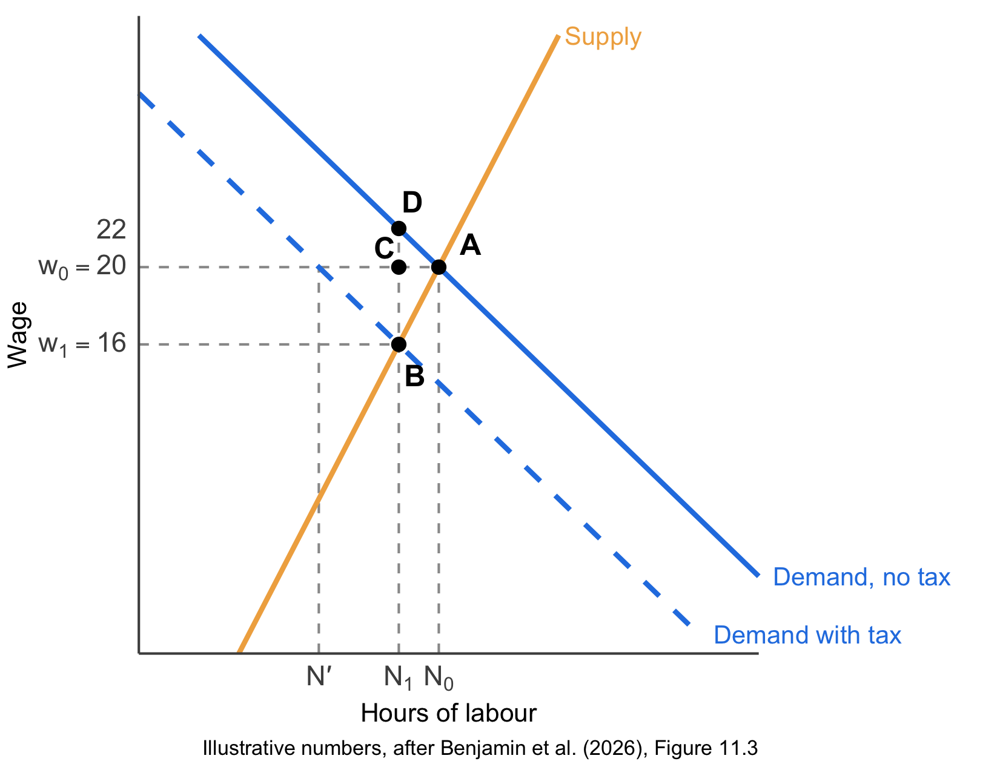

Competitive Labour Markets
EC306- Wages and Employment
Justin Smith
Wilfrid Laurier University
Fall 2026

Goals of This Section
Goals of This Section
In this section we will:
- Show how wage competition sets the wage and employment in a competitive labour market
- Use shifts in supply and demand to explain changes in wages and employment
- Ask whether unemployment, and unequal pay for similar workers, mean the model is wrong
- See how product market power affects labour demand, and when workers share in profits
- Solve a linear model for the equilibrium, and find out who really pays a payroll tax
Introduction
Bringing Supply and Demand Together
- Labour supply from Chapter 3 and labour demand from Chapter 8 together set the wage and employment in one labour market
- A labour market is one occupation in one area: hairdressers in Greater Montreal, carpenters in Metro Vancouver
Key Definitions
Perfectly competitive labour market: switching employers costs workers nothing, and hiring or dismissing workers costs firms nothing
Real wage: the nominal wage divided by the price of what workers buy, \(w = W/P\)
- So everyone takes the wage as given. A firm that pays even a little less than the going wage loses all its workers to a rival
- We start with competitive product markets too, and relax that later in the chapter
- The wage in this chapter is the real wage, what the wage buys. We write it \(w\); the Chapter 8 slides used \(W\) for the nominal wage
Competitive Market Equilibrium
Adding Up Firms and Workers
- Kapuskasing is a town of about 8,000 people in northern Ontario. Many retailers there hire cashiers
- Market demand: add up the hours every firm wants at each wage
| Hourly wage | Tim Hortons | Walmart | Canadian Tire | All firms in town |
|---|---|---|---|---|
| $18 | 440 | 720 | 980 | 5,130 |
| $22 | 340 | 650 | 870 | 4,630 |
- Firms want different amounts because their \(MRP_N\) differs, for example because they have different capital
- Each firm is small, so it takes the market wage as given and hires until \(MRP_N\) equals it
- Market supply: add up the hours every worker offers at each wage
- Some cut their hours at high wages, when the income effect wins (Chapter 3)
- But higher wages also pull new workers in, the extensive margin, so market supply keeps rising
- From $18 to $22, the elasticity of market demand is about −0.5 and of market supply about 0.26
Wage Competition Clears the Market
Key Definition
Equilibrium wage: the wage at which the quantity of labour demanded equals the quantity supplied
- At $22: a surplus of 980 hours. Workers short of hours offer to work for less, and the wage falls
- At $10: a shortage of 2,110 hours. Firms bid workers away from each other, and the wage rises
- Competition stops only at equilibrium: here between $14 and $18, closer to $18
- Adam Smith’s invisible hand: no one sets the wage. Competition does
iClicker Question
Walmart in Kapuskasing installs self-checkouts and now wants 300 fewer cashier hours at every wage. What happens at Tim Hortons?
A) Nothing, because Tim Hortons’ demand for cashiers hasn’t changed
B) The market wage falls, and Tim Hortons hires more cashier hours
C) The market wage falls, and Tim Hortons hires fewer cashier hours
D) Walmart’s wage falls, but the other stores’ wages stay the same
E) The wage stays the same, and 300 hours of unemployment last
Efficient, but Not Necessarily Fair
Key Definition
First Theorem of Welfare Economics: a competitive equilibrium is efficient. No other wage makes firms and workers, taken together, better off
- Efficient is not the same as fair
- If supply is large or demand weak, the equilibrium wage can fall below what someone needs to live on
- Employers can still do well in that market
- Raising the wage with a minimum wage helps equity, but risks some of that efficiency
- That efficiency–equity trade-off is at the heart of debates over how far governments should rely on markets to divide up income
- Minimum wages come back in Chapter 12, once firms have some power to set wages
Change in Supply or Demand
Delivery Drivers in Toronto After the Pandemic

- Supply shifts right, 1 to 2: record numbers of international students arrived in 2022, and from October 2022 they could work more than 20 hours a week off campus. Flexible delivery work suits them
- Demand shifts right, 2 to 3: shopping and restaurant meals moved online, and retailers bought delivery vehicles
- Every vehicle needs a driver, so more vehicles raise each driver’s \(MPP_N\), and demand for drivers rises
- More supply alone lowers the wage; more demand alone raises it
- Together: employment rises, and here the real wage ends where it started
Does the Wage or Employment Move More?
| Shift | Wage | Employment |
|---|---|---|
| Demand rises | ↑ | ↑ |
| Supply rises | ↓ | ↑ |
| Both rise | Depends on which shift is bigger | ↑ |
- How a shift splits between the wage and jobs depends on the elasticity of the other curve
- Demand rises and supply is inelastic: few extra workers come forward, so the wage rises a lot and employment a little
- Demand rises and supply is elastic: mostly more jobs, with little change in the wage
- In Toronto: if drivers’ supply was inelastic, or the demand shift was the bigger one, the wage ended above where it started
- This logic comes back twice today, with product market power and with payroll taxes
iClicker Question
A new college in Montreal starts graduating hundreds of extra hairdressers a year. People barely get more haircuts when prices fall, so the demand for hairdressers is inelastic. In the Greater Montreal market for hairdressers:
A) The wage falls a lot, and employment rises a little
B) The wage falls a little, and employment rises a lot
C) The wage and employment both fall
D) The wage doesn’t change, because the demand for hairdressers hasn’t changed
E) Employment doesn’t change, because the demand for hairdressers hasn’t changed
Implications of the Competitive Market Equilibrium
Implication 1: No Lasting Unemployment or Shortages

- The model: competition continues until the market clears, so neither unemployment nor shortages last
- The data: Canada’s unemployment rate has never come close to zero since the Labour Force Survey began in 1976
- Its lowest annual rate was 5.3%, in 2022
- Shortages are real too: job vacancies passed 1 million in 2022, as baby boomers retire
- Unemployed workers and unfilled jobs at the same time. Is the model wrong?
Implication 2: Equal Pay for Equally Productive Workers
- The model: workers doing the same work in the same market earn the same wage
- Example: Hearst is 96 km west of Kapuskasing. Suppose Kapuskasing pays cashiers more, workers know it, and getting there is free
- Hearst cashiers offer to work in Kapuskasing for a bit less than Kapuskasing cashiers get, so the Kapuskasing wage falls
- Hearst loses cashiers, so Hearst stores raise wages to keep them
- This continues until the two wages are equal
- Evidence that fits: Alberta’s resource boom after 2003 raised wages as far away as Newfoundland. The option of commuting to an Alberta job let workers bargain for more at home (Green et al. 2019)
- Evidence that doesn’t: Costco has long paid its cashiers more than Walmart, and gender and racial pay gaps have lasted for decades
Is the Model Wrong, or Are the Data?
- Markets in motion: supply and demand shift constantly, so the data may be snapshots of markets on their way to a new equilibrium. But wage gaps last too long for that to be the whole story
- Unemployed at what wage? Someone counted as unemployed may want more than the market wage. A firm with a vacancy may be offering less. Surveys don’t ask about wages, and no one is unemployed at the market wage
- Workers and jobs differ: in skills and work ethic, and in stress, flexibility, benefits and safety. Our data miss much of this
Key Definition
Compensating wage differentials: wage differences that make up for differences in the non-wage features of jobs
- Not perfectly competitive: licences for doctors and engineers, minimum wages and unions, imperfect information, and the costs of changing jobs or hiring
- The real question: is the model a good enough approximation? Chapter 12 asks whether employers have power to set wages
iClicker Question
Two equally skilled welders in Alberta. One works at remote oil sands sites, on two-week rotations away from home, for $55 an hour. The other works in an Edmonton fabrication shop for $38 an hour. What does this gap tell us about the competitive model?
A) It contradicts implication 2: equally productive workers should earn the same wage
B) It fits the model: the higher wage makes up for the worse working conditions
C) It fits the model only if the oil sands welder is more productive
D) The market is still adjusting, and the gap will close over time
E) It shows that the oil sands employer has the power to set wages
Imperfect Competition in the Product Market
Product Market Power Lowers Labour Demand
- Labour markets are defined by occupation, not industry. Drivers deliver food or clothes; banks and schools both hire IT technicians
- So a firm can have power where it sells, but be one of many where it hires
- From Chapter 8: a monopolist restricts its output to raise its price. Less output needs less labour, and \(MRP_N = MR_Q \times MPP_N\) is below \(p \times MPP_N\) at every \(N\)
- Market labour demand adds up firms’ demands, so more product market power means lower labour demand
- If product markets become less competitive over time, labour demand falls:
- Wages fall more if labour supply is inelastic
- Jobs fall more if labour supply is elastic
- But a monopolist can’t mark down the wage. If it pays less than the going wage, its workers leave
iClicker Question
A city gives one company the only licence to run taxis. It hires drivers in a market that also includes ride-hailing, delivery and courier firms. In the competitive model, compared with many competing taxi companies, the licensed company:
A) Pays its drivers less than the going wage, because it has monopoly power
B) Pays the going wage, but hires fewer drivers
C) Pays more than the going wage, because it earns monopoly profit
D) Pays the going wage, and hires the same number of drivers
E) Hires more drivers, because its profits let it expand
Rent Sharing
- A monopolist that pays the going wage keeps all its monopoly profit, or rent
- But workers often get a share. Unions bargain for one (Chapter 16), and even non-union workers earn more where profits are higher
Key Definition
Rent sharing: workers in competitive labour markets capturing part of the profit their employer earns from product market power
- Hard to measure: higher pay at profitable firms could reflect more productive workers, or jobs that are worse in ways the data miss
- So researchers use changes in profits that the workers didn’t cause:
- US bank deregulation: as states let competing banks in, bank wages fell, 12% for men and 3% for women
- Patents: where patents were granted rather than rejected, workers got about 30% of the extra profit, more for men and the highest paid
- UK firms: strong rent sharing, but much less in the 2000s than in the 1980s and 1990s
- Why it matters: pay depends on the employer’s profits, not just productivity. That breaks implication 2
Working with Supply and Demand
Solving for the Equilibrium
- To judge a policy, we often need numbers: what does it do to the wage, and to employment?
Key Definitions
Endogenous variables: determined inside the model, here \(w\), \(N^S\) and \(N^D\)
Exogenous variables: taken as given from outside the model. \(X\) shifts supply and \(Z\) shifts demand
Reduced form: equations that give each endogenous variable in terms of the exogenous ones
\[N^S = a + bw + \delta X, \quad b > 0 \qquad\qquad N^D = c + fw + \theta Z, \quad f < 0\]
- Set \(N^S = N^D\) and solve for the reduced form:
\[w^* = \frac{a-c}{f-b} + \frac{\delta}{f-b}X - \frac{\theta}{f-b}Z \qquad\qquad N^* = \frac{af-bc}{f-b} + \frac{f\delta}{f-b}X - \frac{b\theta}{f-b}Z\]
- Example: if \(X\) is the cost of child care, \(\delta < 0\). Cheaper child care raises \(N^*\) and lowers \(w^*\)
A Worked Example
- Supply: \(N^S = 60 + w\). Demand: \(N^D = 120 - 2w\)
- Set them equal: \(60 + w = 120 - 2w\), so \(3w = 60\)
- \(w^* = 20\) and \(N^* = 80\)
- Same answer from the formula, with \(a = 60\), \(b = 1\), \(c = 120\), \(f = -2\): \(w^* = \dfrac{60 - 120}{-2 - 1} = 20\)
- Cheaper child care: supply rises by 6 hours at every wage, so \(N^S = 66 + w\)
- \(66 + w = 120 - 2w\), so \(w^* = 18\) and \(N^* = 84\): more employment at a lower wage
- Elasticities at the equilibrium: supply \(1 \times \dfrac{20}{80} = 0.25\), demand \(-2 \times \dfrac{20}{80} = -0.5\). Close to the cashier market
Application: Incidence of a Payroll Tax
Are Payroll Taxes Job Killers?
Key Definition
Pure payroll tax: a tax on employers in proportion to their total wage bill. British Columbia, Manitoba, Ontario, Quebec, and Newfoundland and Labrador have one
- More common are CPP/QPP and EI premiums, workers’ compensation, and some provincial health levies. Your pay stub splits these between you and your employer, at least on paper
- Critics call payroll taxes job killers: they raise the cost of hiring
- The model: employers pay a tax of \(T\) per hour. The firm pays \(w + T\): \(w\) to the worker and \(T\) to the government
- Step by step:
- The most a firm will pay a worker for the \(N\)th hour is now \(MRP_N - T\)
- So the demand curve, measured in the wage workers get, shifts down by exactly \(T\) at every \(N\)
- At the old wage, firms want fewer hours: a surplus of workers. Wage competition pushes the wage down until supply equals demand again
Who Really Pays?

- Before the tax: point A. Wage 20, 80 hours
- After a $6 tax: point B. Workers get 16, firms pay \(16 + 6 = 22\), and hours fall to 76
- Workers bear \(\dfrac{20 - 16}{6} = \dfrac{2}{3}\) of the tax, through a lower wage
- Firms bear \(\dfrac{22 - 20}{6} = \dfrac{1}{3}\), through a higher cost of labour
Key Definitions
Tax incidence: who bears a tax
- Statutory: who is legally required to pay it. Here, employers
- Economic: who actually ends up worse off. Here, shared, mostly workers
Solving for the Equilibrium with the Tax
- With the tax, an hour of work costs the firm \(w + T\), so labour demand depends on \(w + T\) instead of \(w\)
With the numbers:
- Supply: \(N^S = 60 + w\)
- Demand with a $6 tax: \(N^D = 120 - 2(w + 6)\)
- Set them equal: \(60 + w = 108 - 2w\), so \(3w = 48\)
- Workers get \(w_1 = 16\)
- Firms pay \(w_1 + T = 22\)
- Hours: \(N_1 = 60 + 16 = 76\)
In general:
- Supply: \(N^S = a + bw\). Demand: \(N^D = c + f(w + T)\)
- Set them equal: \((b - f)\,w = c - a + fT\)
\[w_1 = \frac{c - a}{b - f} + \frac{f}{b - f}\,T = w_0 + \frac{f}{b - f}\,T\]
- \(w_0\) is the wage with no tax. Since \(f < 0\), the tax lowers the wage workers get
- Workers bear \(\dfrac{-f}{b - f}\) of the tax, and firms bear \(\dfrac{b}{b - f}\)
Elasticities Decide the Split
- From the last slide, workers’ share of the tax is \(\dfrac{-f}{b - f}\). It depends only on the slopes \(b\) and \(f\)
- With \(T = 6\), and every case starting from \(w = 20\) and 80 hours:
| Case | \(b\) | \(f\) | Workers get | Firms pay (\(w + T\)) | Hours | Workers’ share |
|---|---|---|---|---|---|---|
| Inelastic supply | 1 | −2 | 16 | 22 | 76 | 2/3 |
| Elastic supply | 4 | −2 | 18 | 24 | 72 | 1/3 |
| Inelastic demand (short run) | 1 | −0.5 | 18 | 24 | 78 | 1/3 |
- Inelastic supply: workers keep working at a lower wage, so they bear more of the tax, and fewer jobs are lost
- Elastic supply: workers leave when the wage falls, so firms bear more, through lower profits or higher prices, and more jobs are lost
- Short run vs. long run: labour demand is less elastic in the short run (Chapter 8), so firms bear more at first and fewer jobs are lost. Over time, more of the tax shifts to workers
iClicker Question
In a labour market, supply is \(N^S = a + 2w\) and demand is \(N^D = c - 4w\). The government puts a payroll tax of $3 an hour on employers. In the new equilibrium, the wage workers receive:
A) Doesn’t change, because employers pay the tax
B) Falls by $1
C) Falls by $2
D) Falls by $3
E) Rises by $1
Evidence: Workers Bear Most of the Tax
- Why it’s hard to measure: rate changes are usually small, like 4% to 5% of payroll. And governments may raise rates when labour markets are strong, which makes the taxes look good for jobs
- Chile, 1981 (Gruber 1997): privatizing public pensions cut the average employer rate from 30% to 8.5%. Almost all of the cut went into higher wages, with little change in employment
- Canada (Deslauriers et al. 2021): linked tax records for workers and their employers, using rates that differ with payroll size and Manitoba’s 2007 cut for medium-sized firms
- No effect on employment or output: the tax was passed entirely to workers as lower wages
- In the model, \(b\) is close to zero, so workers’ share is close to one. That fits the small supply elasticities in Chapter 3
- Earlier Canadian evidence agrees: job losses are small in the long run (Kesselman 1996)
- So payroll taxes aren’t job killers, but workers pay them, through lower wages. In return they get the pensions and EI the taxes fund
Summary
Summary
Competitive market equilibrium:
- Wage competition moves the wage to where supply equals demand. The result is efficient, but not necessarily fair
Changes in supply or demand:
- Shifts change the wage and employment. Elasticities decide which moves more
Implications of the competitive model:
- No lasting unemployment, and equal pay for equal workers. The data don’t fit neatly, because of how we measure, differences between workers and jobs, and imperfect competition
Imperfect competition in the product market:
- Product market power lowers labour demand. A monopolist still pays the going wage, but workers often share its profits
Working with supply and demand:
- Linear supply and demand can be solved for the equilibrium wage and employment
Payroll taxes:
- Who bears a payroll tax depends on elasticities. The evidence says workers bear most of it, and job losses are small
References
- Bell, B., Bukowski, P., & Machin, S. (2024). The decline in rent sharing. Journal of Labor Economics, 42(3), 683–716.
- Benjamin, D., Foley, K., Gunderson, M., Lemieux, T., Schirle, T., & Skuterud, M. (2026). Labour Market Economics, 2026 Release. McGraw Hill. Chapter 11.
- Black, S. E., & Strahan, P. E. (2001). The division of the spoils: Rent-sharing and discrimination in a regulated industry. American Economic Review, 91(4), 814–831.
- Blanchflower, D. G., Oswald, A. J., & Sanfey, P. (1996). Wages, profits, and rent-sharing. Quarterly Journal of Economics, 111(1), 227–251.
- Deslauriers, J., Dostie, B., Gagné, R., & Paré, J. (2021). Estimating the impacts of payroll taxes: Evidence from Canadian employer-employee tax data. Canadian Journal of Economics, 54(4), 1609–1637.
- Green, D. A., Morissette, R., Sand, B. M., & Snoddy, I. (2019). Economy-wide spillovers from booms: Long-distance commuting and the spread of wage effects. Journal of Labor Economics, 37(S2), S643–S687.
References (cont.)
- Gruber, J. (1997). The incidence of payroll taxation: Evidence from Chile. Journal of Labor Economics, 15(3, Part 2), S72–S101.
- Hildreth, A. K. G., & Oswald, A. J. (1997). Rent-sharing and wages: Evidence from company and establishment panels. Journal of Labor Economics, 15(2), 318–337.
- Kesselman, J. R. (1996). Payroll taxes in the finance of social security. Canadian Public Policy, 22(2), 162–179.
- Kline, P., Petkova, N., Williams, H., & Zidar, O. (2019). Who profits from patents? Rent-sharing at innovative firms. Quarterly Journal of Economics, 134(3), 1343–1404.
- Statistics Canada. (2025). Labour force characteristics by sex and detailed age group, annual (Table 14-10-0327-01). Labour Force Survey.